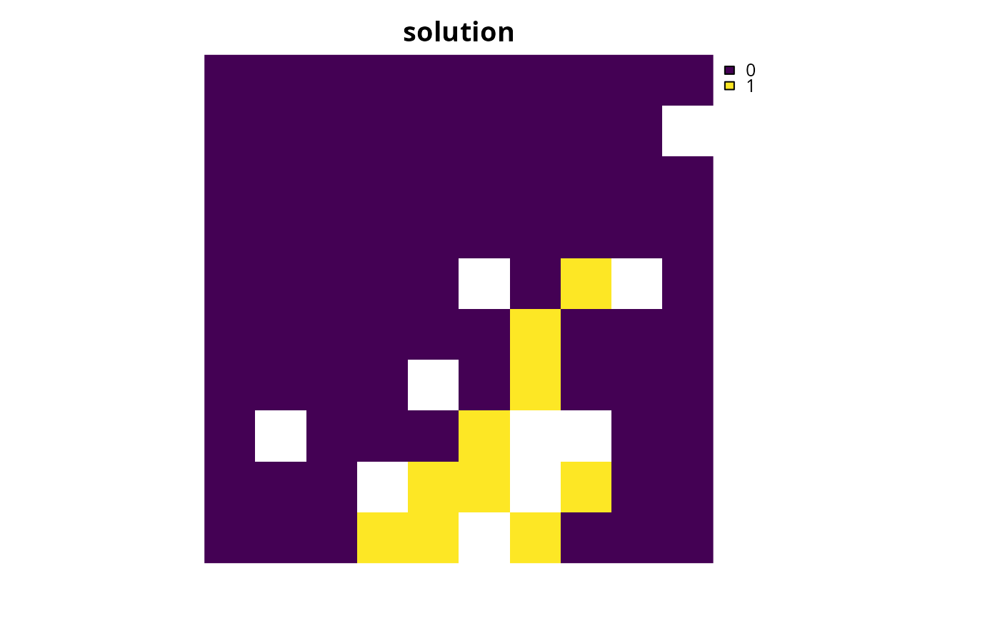

Solve a conservation planning problem.
Arguments
| a |
|
|---|---|
| b |
|
| ... | arguments passed to |
Value
A numeric, matrix,
RasterLayer-class, or
Spatial-class object containing the solution to
the problem. Additionally, the returned object will have the following
additional attributes: "objective" containing the solution's
objective, "runtime" denoting the number of seconds that elapsed
while solving the problem, and "status" describing the
status of the solution (e.g. "OPTIMAL" indicates that the
optimal solution was found).
Details
The object returned from this function depends on the argument to
a. If the argument to a is an
OptimizationProblem-class object, then the
solution is returned as a logical vector showing the status
of each planning unit in each zone. On the other hand, if the argument
to a is an ConservationProblem-class object,
then the type of object returned depends on the number of solutions
generated and the type data used to represent planning unit costs in the
argument to a.
numericvectorcontaining the solution. Here, Each element corresponds to a different planning unit. If multiple solutions are generated, then the solution is returned as alistofnumericvectors.matrixcontaining
numericvalues for the solution. Here, rows correspond to different planning units, and fields (columns) correspond to different management zones. If multiple solutions are generated, then the solution is returned as alistofmatrixobjects.Raster-classobject containing the solution in pixel values. If the argument to
xcontains a single management zone, then aRasterLayerobject will be returned. Otherwise, if the argument toxcontains multiple zones, then aRasterStack-classobject will be returned containing a different layer for each management zone. If multiple solutions are generated, then the solution is returned as alistofRasterobjects.Spatial-classordata.framecontaining the solution in fields (columns). Here, each row corresponds to a different planning unit. If the argument to
xcontains a single zone, the fields containing solutions are named"solution_XXX"where"XXX"corresponds to the solution number. If the argument toxcontains multiple zones, the fields containing solutions are named"solution_XXX_YYY"where"XXX"corresponds to the solution and"YYY"is the name of the management zone.
Since this function returns an object that specifies how much of each
planning unit is allocated to each management zone, it may be useful to use
the category_layer function to reformat the output
for problems containing multiple zones.
See also
problem, solvers,
category_layer
Examples
# set seed for reproducibility set.seed(500) # load data data(sim_pu_raster, sim_pu_polygons, sim_features, sim_pu_zones_stack, sim_pu_zones_polygons, sim_features_zones) # build minimal conservation problem with raster data p1 <- problem(sim_pu_raster, sim_features) %>% add_min_set_objective() %>% add_relative_targets(0.1) %>% add_binary_decisions()# solve the problem s1 <- solve(p1)#> Optimize a model with 5 rows, 90 columns and 450 nonzeros #> Variable types: 0 continuous, 90 integer (90 binary) #> Coefficient statistics: #> Matrix range [2e-01, 9e-01] #> Objective range [2e+02, 2e+02] #> Bounds range [1e+00, 1e+00] #> RHS range [3e+00, 8e+00] #> Found heuristic solution: objective 2337.9617505 #> Presolve time: 0.00s #> Presolved: 5 rows, 90 columns, 450 nonzeros #> Variable types: 0 continuous, 90 integer (90 binary) #> Presolved: 5 rows, 90 columns, 450 nonzeros #> #> #> Root relaxation: objective 1.924252e+03, 13 iterations, 0.00 seconds #> #> Nodes | Current Node | Objective Bounds | Work #> Expl Unexpl | Obj Depth IntInf | Incumbent BestBd Gap | It/Node Time #> #> 0 0 1924.25198 0 4 2337.96175 1924.25198 17.7% - 0s #> H 0 0 1979.9609382 1924.25198 2.81% - 0s #> #> Explored 1 nodes (13 simplex iterations) in 0.00 seconds #> Thread count was 1 (of 4 available processors) #> #> Solution count 2: 1979.96 2337.96 #> #> Optimal solution found (tolerance 1.00e-01) #> Best objective 1.979960938178e+03, best bound 1.924251977336e+03, gap 2.8136%#> class : RasterLayer #> dimensions : 10, 10, 100 (nrow, ncol, ncell) #> resolution : 0.1, 0.1 (x, y) #> extent : 0, 1, 0, 1 (xmin, xmax, ymin, ymax) #> coord. ref. : NA #> data source : in memory #> names : layer #> values : 0, 1 (min, max) #># print attributes describing the optimization process and the solution print(attr(s1, "objective"))#> solution_1 #> 1979.961#> solution_1 #> 0.002036095#> solution_1 #> "OPTIMAL"# plot solution plot(s1, main = "solution", axes = FALSE, box = FALSE)# build minimal conservation problem with spatial polygon data p2 <- problem(sim_pu_polygons, sim_features, cost_column = "cost") %>% add_min_set_objective() %>% add_relative_targets(0.1) %>% add_binary_decisions()# solve the problem s2 <- solve(p2)#> Optimize a model with 5 rows, 90 columns and 450 nonzeros #> Variable types: 0 continuous, 90 integer (90 binary) #> Coefficient statistics: #> Matrix range [2e-01, 9e-01] #> Objective range [2e+02, 2e+02] #> Bounds range [1e+00, 1e+00] #> RHS range [3e+00, 7e+00] #> Found heuristic solution: objective 2145.2678910 #> Presolve time: 0.00s #> Presolved: 5 rows, 90 columns, 450 nonzeros #> Variable types: 0 continuous, 90 integer (90 binary) #> Presolved: 5 rows, 90 columns, 450 nonzeros #> #> #> Root relaxation: objective 1.726522e+03, 11 iterations, 0.00 seconds #> #> Nodes | Current Node | Objective Bounds | Work #> Expl Unexpl | Obj Depth IntInf | Incumbent BestBd Gap | It/Node Time #> #> 0 0 1726.52215 0 4 2145.26789 1726.52215 19.5% - 0s #> H 0 0 1792.7738341 1726.52215 3.70% - 0s #> #> Explored 1 nodes (11 simplex iterations) in 0.00 seconds #> Thread count was 1 (of 4 available processors) #> #> Solution count 2: 1792.77 2145.27 #> #> Optimal solution found (tolerance 1.00e-01) #> Best objective 1.792773834063e+03, best bound 1.726522151579e+03, gap 3.6955%#> cost locked_in locked_out solution_1 #> 1 215.8638 FALSE FALSE 0 #> 2 212.7823 FALSE FALSE 0 #> 3 207.4962 FALSE FALSE 0 #> 4 208.9322 FALSE TRUE 0 #> 5 214.0419 FALSE FALSE 0 #> 6 213.7636 FALSE FALSE 0# plot solution spplot(s2, zcol = "solution_1", main = "solution", axes = FALSE, box = FALSE)# build multi-zone conservation problem with raster data p3 <- problem(sim_pu_zones_stack, sim_features_zones) %>% add_min_set_objective() %>% add_relative_targets(matrix(runif(15, 0.1, 0.2), nrow = 5, ncol = 3)) %>% add_binary_decisions()# solve the problem s3 <- solve(p3)#> Optimize a model with 105 rows, 270 columns and 1620 nonzeros #> Variable types: 0 continuous, 270 integer (270 binary) #> Coefficient statistics: #> Matrix range [2e-01, 1e+00] #> Objective range [2e+02, 2e+02] #> Bounds range [1e+00, 1e+00] #> RHS range [1e+00, 2e+01] #> Found heuristic solution: objective 12406.438131 #> Presolve removed 4 rows and 0 columns #> Presolve time: 0.00s #> Presolved: 101 rows, 270 columns, 1260 nonzeros #> Variable types: 0 continuous, 270 integer (270 binary) #> Presolved: 101 rows, 270 columns, 1260 nonzeros #> #> #> Root relaxation: objective 1.089584e+04, 93 iterations, 0.00 seconds #> #> Nodes | Current Node | Objective Bounds | Work #> Expl Unexpl | Obj Depth IntInf | Incumbent BestBd Gap | It/Node Time #> #> 0 0 10895.8449 0 11 12406.4381 10895.8449 12.2% - 0s #> H 0 0 11061.539557 10895.8449 1.50% - 0s #> #> Explored 1 nodes (93 simplex iterations) in 0.01 seconds #> Thread count was 1 (of 4 available processors) #> #> Solution count 2: 11061.5 12406.4 #> #> Optimal solution found (tolerance 1.00e-01) #> Best objective 1.106153955729e+04, best bound 1.089584492967e+04, gap 1.4979%#> class : RasterStack #> dimensions : 10, 10, 100, 3 (nrow, ncol, ncell, nlayers) #> resolution : 0.1, 0.1 (x, y) #> extent : 0, 1, 0, 1 (xmin, xmax, ymin, ymax) #> coord. ref. : NA #> names : layer.1.1, layer.1.2, layer.1.3 #> min values : 0, 0, 0 #> max values : 1, 1, 1 #># build multi-zone conservation problem with spatial polygon data p4 <- problem(sim_pu_zones_polygons, sim_features_zones, cost_column = c("cost_1", "cost_2", "cost_3")) %>% add_min_set_objective() %>% add_relative_targets(matrix(runif(15, 0.1, 0.2), nrow = 5, ncol = 3)) %>% add_binary_decisions()# solve the problem s4 <- solve(p4)#> Optimize a model with 105 rows, 270 columns and 1620 nonzeros #> Variable types: 0 continuous, 270 integer (270 binary) #> Coefficient statistics: #> Matrix range [2e-01, 1e+00] #> Objective range [2e+02, 2e+02] #> Bounds range [1e+00, 1e+00] #> RHS range [1e+00, 1e+01] #> Found heuristic solution: objective 10442.494915 #> Presolve removed 6 rows and 0 columns #> Presolve time: 0.00s #> Presolved: 99 rows, 270 columns, 1080 nonzeros #> Variable types: 0 continuous, 270 integer (270 binary) #> Presolved: 99 rows, 270 columns, 1080 nonzeros #> #> #> Root relaxation: objective 8.882300e+03, 38 iterations, 0.00 seconds #> #> Nodes | Current Node | Objective Bounds | Work #> Expl Unexpl | Obj Depth IntInf | Incumbent BestBd Gap | It/Node Time #> #> 0 0 8882.30031 0 8 10442.4949 8882.30031 14.9% - 0s #> H 0 0 9038.3070245 8882.30031 1.73% - 0s #> #> Explored 1 nodes (38 simplex iterations) in 0.01 seconds #> Thread count was 1 (of 4 available processors) #> #> Solution count 2: 9038.31 10442.5 #> #> Optimal solution found (tolerance 1.00e-01) #> Best objective 9.038307024493e+03, best bound 8.882300309714e+03, gap 1.7261%#> cost_1 cost_2 cost_3 locked_1 locked_2 locked_3 solution_1_zone_1 #> 1 215.8638 183.3344 205.4113 FALSE FALSE FALSE 0 #> 2 212.7823 189.4978 209.6404 FALSE FALSE FALSE 0 #> 3 207.4962 193.6007 215.4212 TRUE FALSE FALSE 1 #> 4 208.9322 197.5897 218.5241 FALSE FALSE FALSE 1 #> 5 214.0419 199.8033 220.7100 FALSE FALSE FALSE 0 #> 6 213.7636 203.1867 224.6809 FALSE FALSE FALSE 0 #> solution_1_zone_2 solution_1_zone_3 #> 1 0 0 #> 2 0 0 #> 3 0 0 #> 4 0 0 #> 5 1 0 #> 6 1 0# create new columnrepresenting the zone id that each planning unit # was allocated to in the solution s4$solution <- category_vector(s4@data[, c("solution_1_zone_1", "solution_1_zone_2", "solution_1_zone_3")]) s4$solution <- factor(s4$solution) # plot solution spplot(s4, zcol = "solution", main = "solution", axes = FALSE, box = FALSE)